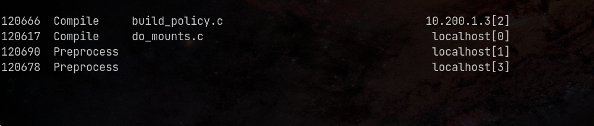

Немного про распределенную компиляцию
Мотивация / Введение
Мне, как любителю Linux, всегда было интересно изучить Gentoo Linux. На это есть множество причин, сейчас не о них. Суть в том, этап установки системы на виртуальную машину пройден и есть желание попробовать установить на второстепенный маломощный нетбук. Возникает проблема: Gentoo Linux -- это т.н. "source-based" дистрибутив, т.е. она распространяется в виде исходного кода. В свою очередь, компиляция системы на нетбуке занимает чуть больше суток (возможно, это можно поправить более тщательной конфигурацией перед сборкой, но, на мой взгляд, это слишком "хардкорный" путь для знакомства с системой). Конечно, компиляция ядра, строго говоря, необязательна, так как можно поставить предварительно скомпилированную версию. Но так неинтересно.
Таким образом, возникает вопрос -- можно ли ускорить компиляцию
на слабых ПК? Тут на помощь приходит distcc,
своего рода фронтенд для компиляторов C/C++.
Сегодня мы хотим посмотреть на возможность компиляции ядра Linux (минимальной
конфигурации tinyconfig) на двух виртуальных машинах с разными
характеристиками. Но для этого нужно рассказать про утилиту vagrant,
конфигуратор виртуальных машин.
Vagrant
Vagrant1 (с англ. — «бродяга») — свободное и открытое программное обеспечение для создания и конфигурирования виртуальной среды разработки. Является обёрткой для программного обеспечения виртуализации, например VirtualBox, и средств управления конфигурациями, таких как Chef, Salt и Puppet.
Данная утилита полезна тем, что позволяет, используя шаблоны виртуальных машин, запускать их. Для описания стэка требуется один т.н. Vagrantfile. Она может работать совместно с qemu, VirtualBox, VMWare и пр.
О vagrant стоит знать потому, что в какой момент, эксперементируя с виртуальными машинами, надоест каждый раз их устанавливать в условном VMWare.
Distcc
distcc2 (от англ. distributed C/C++/ObjC compiler) — инструмент, позволяющий компилировать исходные коды при помощи компиляторов C/C++/ObjC на удалённых машинах, что ускоряет процесс компиляции.
Важно понимать, что это своего рода фронтенд для компиляторов, сам по себе он не компилирует код.
Компиляция
Демонстрация стенда
Для начала построчно рассмотрим Vagrantfile. При его написании используется язык Ruby.
Описание "шаблона" для виртуальных машин. В данном случае это Debian 12 Bookworm.
# Default box
box_name = "debian.jessie64.libvirt.box"
Файл можно скачать с сайта HashiCorp.
Описание виртуальной машины, на которой будет основная компиляция:
# Master
master_node = {
:hostname => "master", :ip => "10.200.1.2", :memory => 1024, :cpu => 1
}
Характеристики:
- IP: 10.200.1.2,
- RAM: 1Gb,
- 1 поток.
Они похожи на характеристики моего нетбука, но занижены в целях демонстрации.
Описание второстепенной виртуальной машины:
# List of slaves
slaves = [
{ :memory => 4096, :cpu => 4 },
]
Характеристики:
- RAM: 4Gb,
- 4 потока.
Скрипт для автоматической установки зависимостей:
$distcc_install = <<-SCRIPT
apt update
apt install -y make distcc gcc g++ tmux libz-dev git fakeroot build-essential ncurses-dev xz-utils libssl-dev bc flex libelf-dev bison time neofetch
SCRIPT
Старт конфигурации виртуальных машин:
Vagrant.configure("2") do |config|
Конфигурация основной машины:
# Master node's config
config.vm.box_check_update = false
config.vm.define master_node[:hostname] do |nodeconfig|
nodeconfig.vm.box = box_name
nodeconfig.vm.hostname = master_node[:hostname]
nodeconfig.vm.network(:private_network, ip: master_node[:ip])
nodeconfig.vm.provision "shell", inline: $distcc_install
nodeconfig.vm.provision "file", source: "./linux-6.13.tar.gz", destination: "~/linux-6.13.tar.gz"
nodeconfig.vm.provider :libvirt do |vb|
vb.memory = master_node[:memory]
vb.cpus = master_node[:cpu]
end
end
В нем:
- Отключаются обновления,
- Задаются характеристики ВМ,
- Запускается скрипт установки зависимостей,
- Копируется архив с исходным кодом ядра (должен лежать в директории с Vagrantfile).
Конфигурация второстепенных машин:
# Slaves configs
slaves.each_with_index do |slave, i|
config.vm.box_check_update = false
config.vm.define "slave-#{ i+1 }" do |nodeconfig|
# Default box-name (cause I have only it)
nodeconfig.vm.box = box_name
# Hostname: slave-N
nodeconfig.vm.hostname = "slave-#{ i+1 }"
# IP-address: 10.200.1.{N+2}
nodeconfig.vm.network :private_network, ip: "10.200.1.#{ i+3 }"
nodeconfig.vm.provision "shell", inline: $distcc_install
nodeconfig.vm.provider :libvirt do |vb|
vb.memory = slave[:memory]
vb.cpus = slave[:cpu]
end
end
end
end
Стоит обратить внимание, что IP задается автоматически, начиная от
10.200.1.3 и далее. Сделано это на случай нескольких ВМ.
Компиляция на одной машине (gcc)
Для начала запустим стенд командой vagrant up. На моем ноутбуке это занимает
примерно 127 секунд.
Далее необходимо подключиться к главной машине и распаковать исходники ядра3:
vagrant ssh master
tar xvf linux-6.13.tar.gz
cd linux-6.13
Создаем файл минимальной конфигурации
(с остальными вариантам можно ознакомиться командой make help | less):
make tinyconfig
Важно: для чистоты эксперимента все замеры делаются после команды
make distclean(см.make help).
Запускаем компиляцию с замером времени:
time -p make CC=gcc
Компиляция на одной машине (distcc)
По смыслу, все тоже самое, только нужно указать distcc, на каких хостах можно компилировать:
export DISTCC_HOSTS="localhost"
Запускаем компиляцию с замером времени:
time -p make CC="distcc gcc"
Компиляция на двух машинах (distcc)
Для запуска распределенной компиляции, нужно сначала запустить демон на второй виртуальной машине. Для этого подключаемся к ней и запускаем его:
vagrant ssh slave-1
distccd --daemon --allow-private
Параметр --allow-private разрешает стучаться только с приватных сетей.
Для проверки можно:
- На второй машине проверить открытые порты:
ss -ntlp | grep 3632, - С основной машины постучаться в этот порт:
telnet 10.200.1.3 3632(выход наC-] C-d).
Теперь нужно добавить хост, чтобы на нем можно было удаленно компилировать. Для этого на основной машине:
export DISTCC_HOSTS="localhost 10.200.1.3"
Для проверки можно посмотреть список хостов для компиляции: distcc --show-hosts.
Запустим компиляцию на 5 потоках с замером времени:
time -p make -j5 CC="distcc gcc"
Мониторить компиляцию можно с помощью команды (на основной машине):
watch -n 1 distccmon-text

Таблица сравнения
| Итерация | Одна машина (gcc), с | Одна машина (distcc), с | Две машины (distcc), с |
|---|---|---|---|
| 1 | 176 | 176 | 111 |
| 2 | 186 | 162 | 109 |
| 3 | 187 | 174 | 127 |
| Среднее | 183 | 170 | 115 |
Итог
Можно увидеть, что такая параллелизация дает прирост 37%. Сложно сказать, можно ли разогнать сильнее, так как многое зависит от правил компиляции (например, их нельзя распараллелить больше чем на 5 потоков).
Очевидно, что распределенная компиляция при прочих равных будет проигрывать параллельной, так как общение между потоками по определению быстрее. Но для слабых машин это отлично подходит. К сожалению, у данного метода есть существенные ограничения:
- Версии gcc и distcc должны совпадать (хотя, пишут, что достаточно совпадения только мажорных версий).
- В некоторых случаях нет возможности общения по TCP и требуется подключение по SSH. Например, когда есть ограничения безопасности или при сложной организации сети. Определенно, такое подключение будет медленнее.
Все материалы стенда можно найти в репозитории на Github.